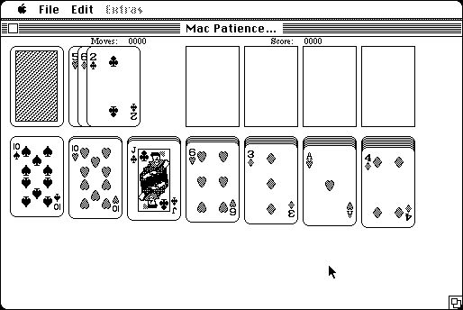

Download
mac_patience_2.01.zip (82K) MacPatience 2.01 repackaged into a zipped hfs disk image and checksum file. The disk image can be mounted with Mini vMac.
mac_patience_2.01.sit (82K) MacPatience 2.01 in the original format.
copyright: Niklas Frykholm
mod date: Jan 28, 1995
license: shareware
official url :
MacPatience
"Plays 5 different solitary card games". (Klondyke, Solitaire, Fan, Pyramide, and Hungarian Slammer)

If you find these downloads useful, please consider helping the Gryphel Project, which hosts them.
Here are the md5 checksums for the downloads, signed with Gryphel Key 5:
--------- GRY SIGNED TEXT --------- 508083a6c8f0262db0286305a510436b mac_patience_2.01.zip 423c19b90d8d68a3810e317c4575a7dd mac_patience_2.01.sit ------- BEGIN GRY SIGNATURE ------- Gry/4Xa8CFcUzxdN/Khube1JKesHgEJL+fJKQYL7yrTlbgQfazyjqjuHYsvDx6Of XyNxE4fMQ4D9CPzlWcibD5WvZnRiasWGPTLgmCnbrnpClkQQPPcHp08TwbgHtCft 8wu0/MDMOnWTKm/nmMBgJwpYSjNmumunXB6G5XJ2+jnNbVcHTjAotjiUx5uwgZPd -------- END GRY SIGNATURE --------